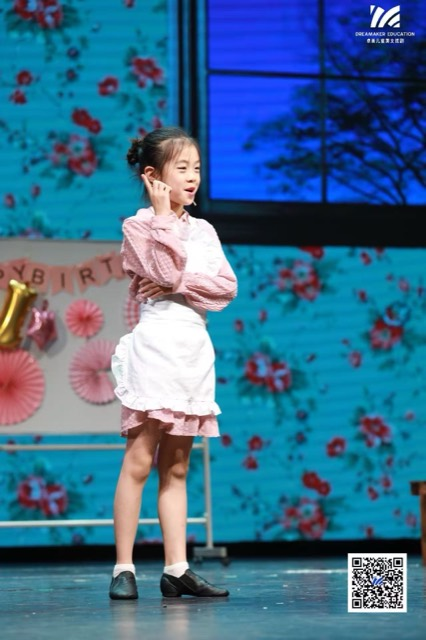
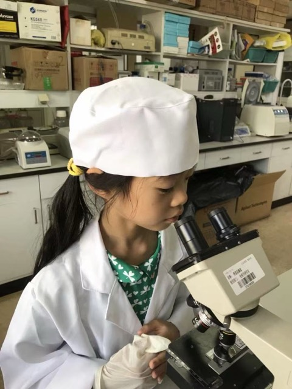
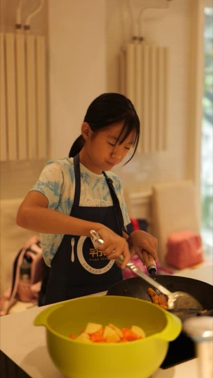
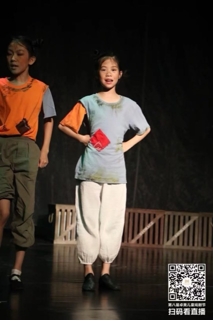
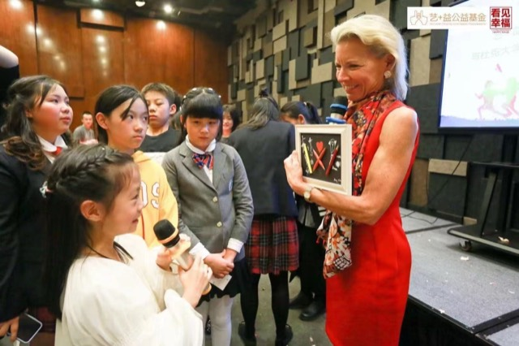
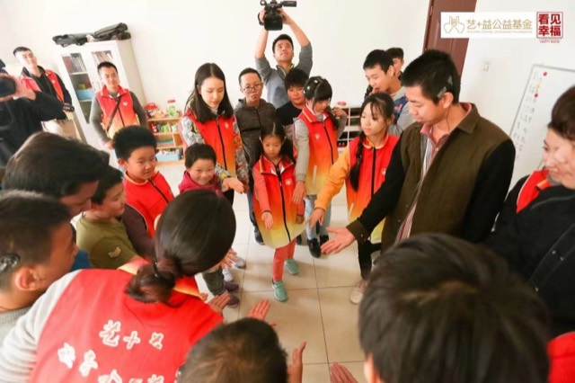
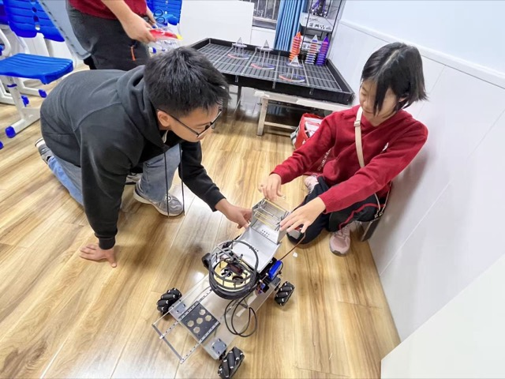
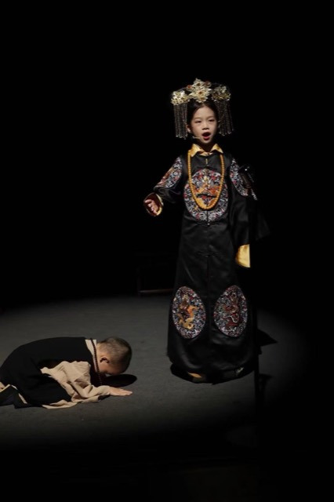
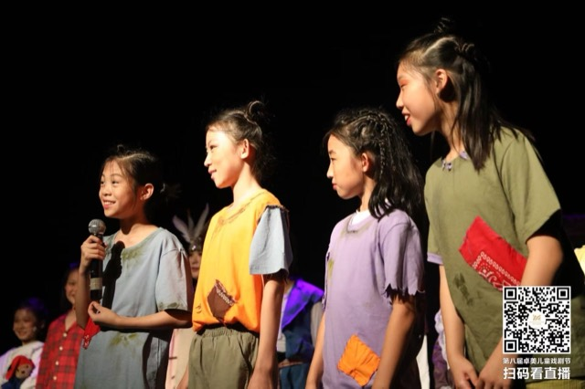
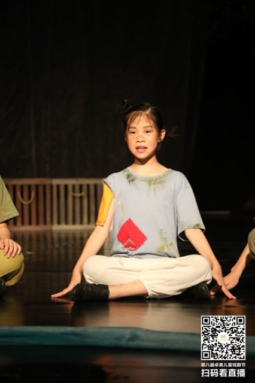
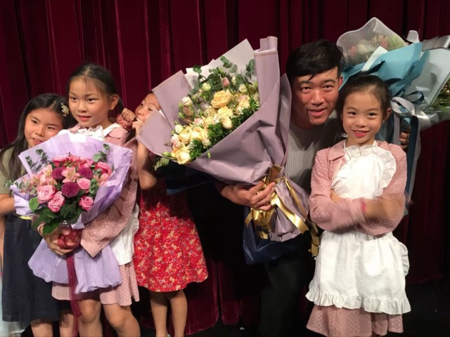
Student builder working across cognitive science, robotics and social impact — turning abstract ideas into running systems, and systems into real-world change.
"If Amy is in the group, things get moved forward." I take initiative, turn ideas into execution, and stay long enough for the result to matter — eight years at the same rehab center, two rebuilds of the same robot.
A vision-guided rover that spares elderly players a thousand bends — craft and computer vision for the neighbourhood court.
Sees, collects and cleans in one pass — built, tested and rebuilt with the players it serves.
The idea came from watching elderly players at our community table-tennis room bend, again and again, for stray balls. I wanted the repetitive part automated so the joyful part could stay human.
The system sees, collects and cleans in a single pass — a camera picks out balls against the floor, the chassis plans a sweep route, and a cleaning drum returns them ready to serve. Built, tested and rebuilt until it earned the Grand Prize.
Highlights:
Conceived after a campus fire made the news — a rover that patrols corridors, watching for heat and smoke while the school sleeps.
From a news story to a working watchman — sensing, deciding and raising the alarm on its own.
A campus fire in the news made safety feel personal. Instead of waiting for alarms mounted on ceilings, I wanted something that moves — a robot that goes looking for trouble before it spreads.
Across two builds it learned to follow patrol routes, read heat and smoke signatures, and relay alerts the moment something looks wrong. The second iteration rethought the chassis and sensor placement from field notes of the first.
Highlights:
Ten days on the Burqin — interviews with farmers, water sampling, and a hydrological convergence model turned into advocacy for the people downstream.
A river understood from both banks — data in one hand, farmers' stories in the other.
In Altay, water is the whole story: who gets it, when, and what's left in it by the time it reaches the last field. We followed the Burqin river from source to farmland, interviewing the people who depend on it at every stop.
Alongside the interviews we sampled water quality and built a hydrological convergence model of the watershed — then brought model and stories together in conversations with local stakeholders about sustainable use.
Highlights:
A smartphone and a 90-dioptre lens as a screening kit — referable diabetic retinopathy triage that runs fully on-device, nothing uploaded.
Screening that travels light — clinic-grade triage in a pocket, for places the clinic doesn't reach.
Diabetic retinopathy is treatable when caught early — but screening needs equipment that rural clinics rarely have. This draft explores whether a phone camera behind a 90-dioptre lens can be enough.
The triage model runs fully on-device: no uploads, no connectivity requirement, an answer in the room. Role and framing are still being confirmed before publication — this page will grow as the work does.
Status: